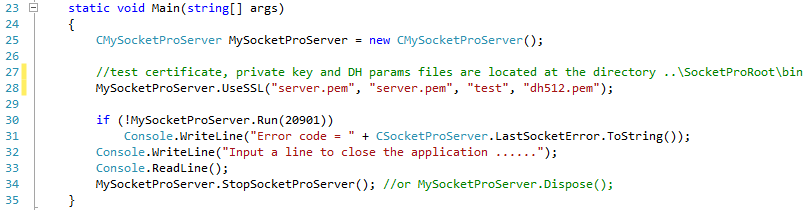
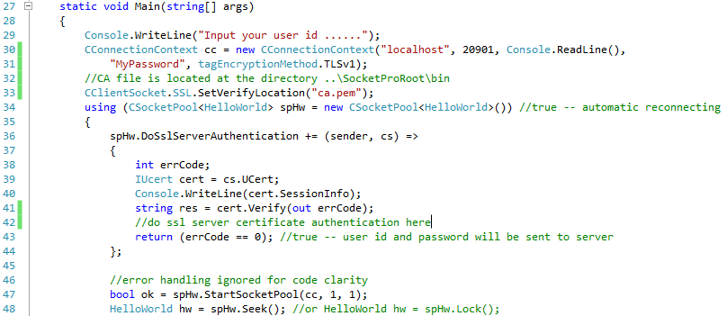
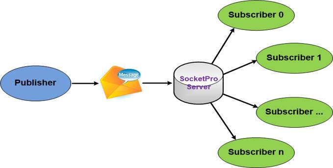
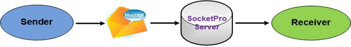
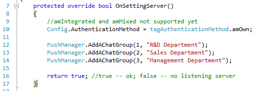
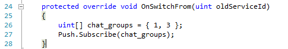
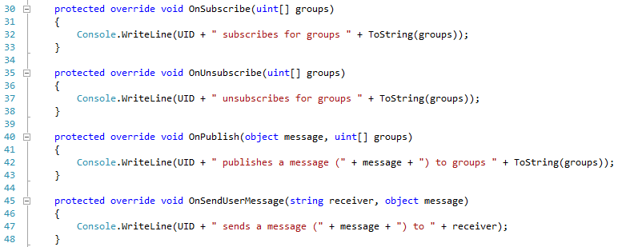
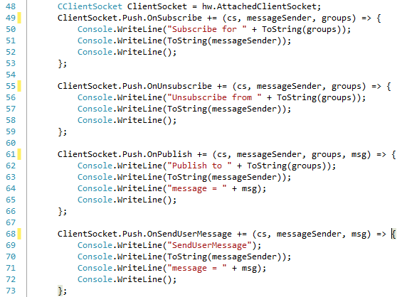
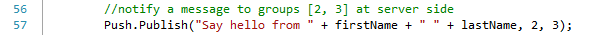

Tutoral 2 -- SocketPro secure communication and built-in bi-directional message pushes
Contents:
Introduction
Use SSL/TLs for secure communication
· Enable SSL/TLs at server side
· Enable SSL/TLS at client side and server certificate authentication
SocketPro built-in bi-directional message pushes
· Two types of message pushes
I. One-to-many
II. One-to-one
· Register a few chat groups at server side
· Subscribe for one or more chat groups of messages
· Track message push event at server side
· Track message push event at client side
Send messages
· Server side
· Client side
1. Introduction
In short, we need to secure sensitive data movement among computers such as passwords, credit cards, personal identification numbers, financial data, and so on. To achieve this purpose, SocketPro uses popular openssl (www.openssl.org) libraries across all supported platforms.
A typical distributed application is involved with a network communication between the client and server only. There is no communication among connected clients at all. However, this architecture does not meet application requirements under many cases. An application may require some ways to enable communications among clients whenever an interested thing happens. This type of communication is similar to Internet chat among a group of people. Therefore, SocketPro provides this type of chat service, which is a built-in service for all of connected socket connections.
For your information, the built-in chat service is also called message bus, message push, subscribe/publish communication model, or real-time notification service. Sometimes, these terminologies are used interchangeably.
Finally, the tutorial sample projects are located at the directory ..\tutorials\(csharp|vbnet|cplusplus|java\src|ce|python)\pub_sub
2. Use SSL/TLS for secure communication
To use SSL/TLS for secure communication, you must enable it at both client and server sides.
Enable SSL/TLS at server side: It is very simple to enable SSL/TLS at server side. All you need to do is call the method UseSSL as shown below in Figure 1 before running a SocketPro server.

Figure 1: Enable SSL/TLS at server side as shown at the line 28
This sample uses sample CA root cert (ca.pem which will be used at client side), server certificate (server.pem) and private key (server.pem) from openssl. The third input (“test”) is password to be used to read a password-protected private key from the private key file server.pem. The last input dh512.pem (Diffie-Hellman algorithm) is optional, which is introduced at the site http://wiki.openssl.org/index.php/Diffie_Hellman. If you download openssl, all of them can be found at the directory ..\openssl\apps after unzipping openssl source codes. We also put test testing files at the directory ..\SocketProRoot\bin.
Enable SSL/TLS for client side and server certification authentication: To enable SSL/TLS at client side, we need to set it as you see the TLSv1 at the end of line 31 on a connection context as shown in the following Figure 2.

Figure 2: Enable SSL/TLS at client side and certification authentication
In addition to enable SSL/TLS at client side, we are also required to authenticate a server certificate as expected before sending any sensitive data from the client to a remote server. This step ensures there is no possibility of a middle-man attack.
To do so, we need to set a callback and check if a certificate from a server is expected. SocketPro uses an event such as that shown in lines 36 through 44, above Figure 2. Inside the callback, we are able to get an interface to the certificate from the remote server. Afterward, we can simply check it with a local saved certificate as you can see at line 33. If both match or certificate chain is verified successfully, the callback returns true and will send sensitive data such as user id and password. Otherwise, it returns false; do not send the two sensitive data and close socket connection.
3. SocketPro built-in bidirectional message pushes
SocketPro supports two types of real-time notification, one-to-many and one-to-one.
One-to-many: As shown in Figure 3, a sender is able to send a message to one or more groups of chatters or subscribers. You can do so from either the client or server side. SocketPro server is able to distribute the message based on an array of input chat group identification numbers (or topic ids) on behalf of the sender. If you use this notification model, a listener or subscriber must first subscribe to one or more chat groups for expected groups of messages; however, a message publisher does not have to.

Figure 3: One-to-many real-time notification within SocketPro server
One-to-one: As shown in the Figure 4, SocketPro is also able to send a message from a client to another client with an input receiver user id.

Figure 4: One-to-one real-time notification within SocketPro server
Note that a sender is always able to send a message to a receiver without requirement of any type of subscription, contrary to the previous one-to-many notification model.
Register a few chat groups at server side: Under many cases, we like to use the one-to-many notification model. To do so, we must register or create a few chat groups or topics at the server side as shown below in Figure 5.

Figure 5: Register a few chat groups at server side
We usually create these chat groups or topics within the virtual function OnSettingServer. Lines 12 through 14 register three chat groups. Now, a message sender is able to tell a SocketPro server how to distribute a message from a given array of chat group identification numbers.
If you just use one-to-one notification model only, there is no need to register these chat groups at all.
Subscribe for one or more chat groups of messages: To use the one-to-many chat model, a subscriber or listener for messages must subscribe to the expected groups of messages. You can do so from either the client or server side. This tutorial sample demonstrates when subscribing for two chat groups of message from the server side as shown in the Figure 6. We let you determine how to subscribe chat groups of messages from the client side after you go through this tutorial.

Figure 6: Subscribe two chat groups of message at line 27 at server side
Since this tutorial server is able to support both one-to-many and one-to-one notification models, we need demos to track notification events at both client and server sides.
Track notification events at server side: As shown in the below Figure 7, SocketPro uses virtual functions to track notification events. Therefore, you need to override these virtual functions.

Figure 7: Track common notification events at server side by overriding a set of virtual functions OnXXX
Lines 45 through 48 are used for tracking one-to-one message model messages. All other lines of codes are for tracking message events related to the one-to-many notification model.
Track notification events at client side: At client side, SocketPro uses events approach instead. See Figure 8 below for details.

Figure 8: Track common notification messages at client side
Similarly to the server side, lines 68 through 73 are used for tracking one-to-one message model messages. All other lines of codes are for tracking message events related with the one-to-many notification model.
4. Send messages
At last, we need some ways to send a message to one or more subscribers (or listeners) as long as there is an interesting thing happening. SocketPro supports sending a message at either client or server side.
Server side: You can call the method Publish after obtaining the property Push as shown in the Figure 9.

Figure 9: Send a message onto two chat groups of subscribers at server side
Similarly, you can send a message to a receiver identified by its user id with the method SendUserMessage.
Client side: You are still able to use the class CClientSocket property Push to send your interesting messages as shown in the below Figure 10.
Figure 10: Send messages at client side
Figure 10 demonstrates publishing a message from line 89 to two chat groups of subscribers, and then sending one message to one receiver as identified by an input user id at line 95.